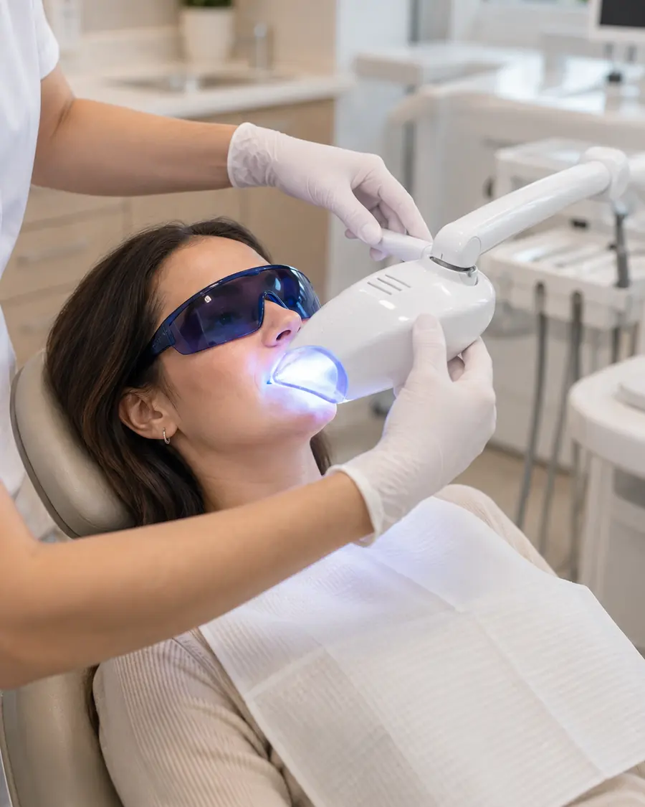
Ein Termin · unter Aufsicht
In der Praxis
Ein stärker dosiertes Gel, aufgetragen und überwacht von uns. Für alle, die das Ergebnis am selben Tag sehen möchten.
Bleaching in Aachen · AIXSMILE
Wir bestimmen Ihre Zahnfarbe vor dem Bleaching mit einer Farbskala und danach noch einmal. So sehen Sie schwarz auf weiß, was sich verändert hat, und nicht nur im Spiegel.
Zahnarztpraxis AIXSMILE, Großkölnstraße, Aachen. Der erste Termin ist eine Untersuchung mit Farbbestimmung und geht über Ihre Krankenkasse.
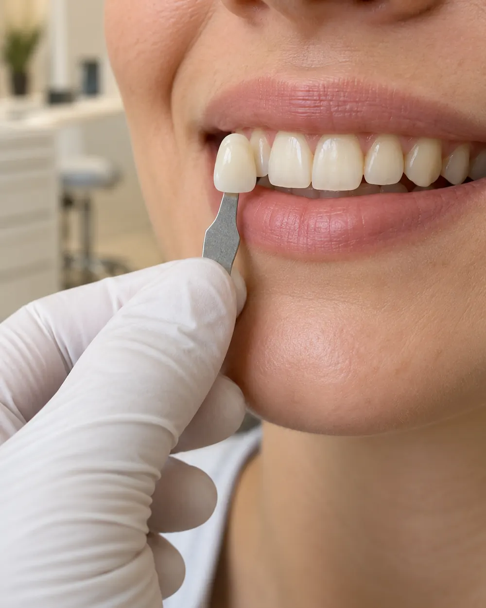
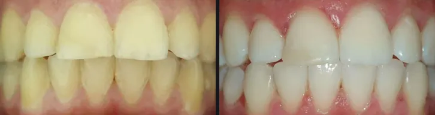
Echter Fall aus unserer PraxisVorher und nachher ansehenVorher und nachher
Veröffentlicht mit Einwilligung der Patientinnen und Patienten. Die Fotos entstanden im Praxisalltag; Licht und Kamera waren vorher und nachher nicht identisch. Farbe zeigt ein Foto deshalb nie so genau wie die Skala.
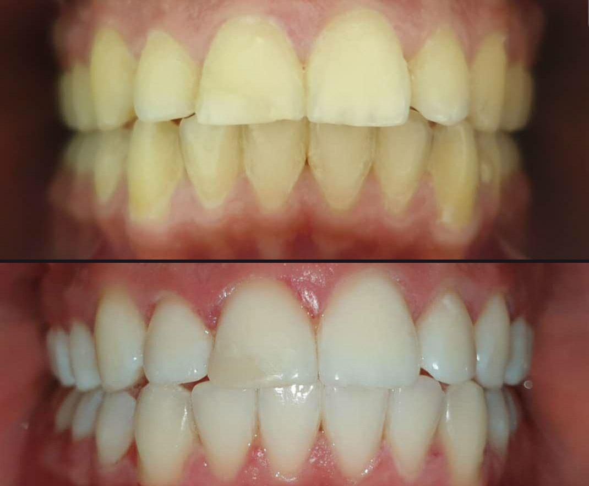
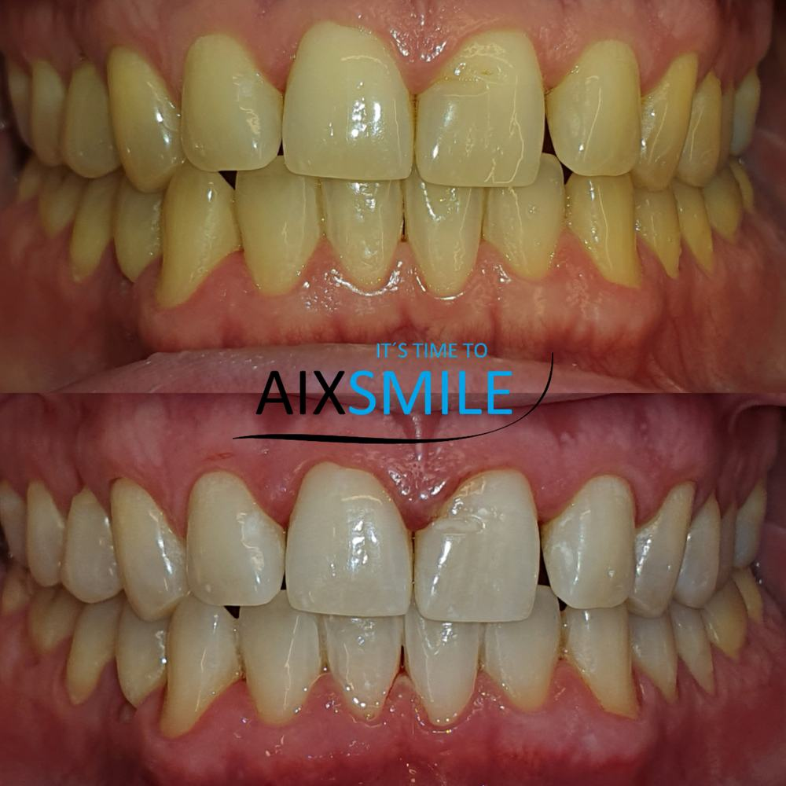
Messen
Neben Ihre Zähne halten wir Musterzähne mit Kürzeln wie A2 oder BL3. Der Buchstabe steht für die Farbrichtung, die Zahl für die Abstufung. Vorher ein Wert, nachher ein Wert.
Vereinfacht. Die echte Skala hat mehr Stufen; gemessen wird im Mund, bei Tageslicht.
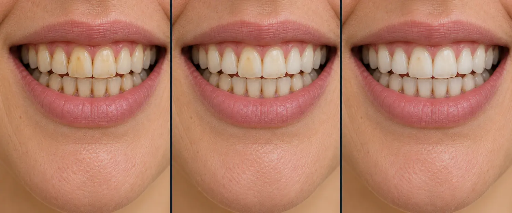
Kosten
Der erste Termin kostet Sie nichts extra: Untersuchung und Farbbestimmung laufen bei gesetzlich Versicherten als Kontrolluntersuchung über die Krankenkasse; Privatversicherte reichen sie wie gewohnt ein. Bezahlt wird erst die Aufhellung selbst, als Privatleistung nach der GOZ.
Einen Betrag nennen wir Ihnen, sobald feststeht, welcher Weg zu Ihren Zähnen passt. Diese drei Punkte entscheiden:
Termin
Unten stehen die Zeiten, die in der Praxis gerade wirklich frei sind. Sie suchen sich eine aus, hinterlassen Name und Telefonnummer, und der Termin steht.
Oder Sie rufen kurz an: 0241 31202Auf aixsmile.de buchen
Zwei Wege
Beide Wege hellen auf; sie unterscheiden sich in Tempo und Dosierung. Welcher zu Ihnen passt, klären wir in der Beratung.

Ein Termin · unter Aufsicht
Ein stärker dosiertes Gel, aufgetragen und überwacht von uns. Für alle, die das Ergebnis am selben Tag sehen möchten.
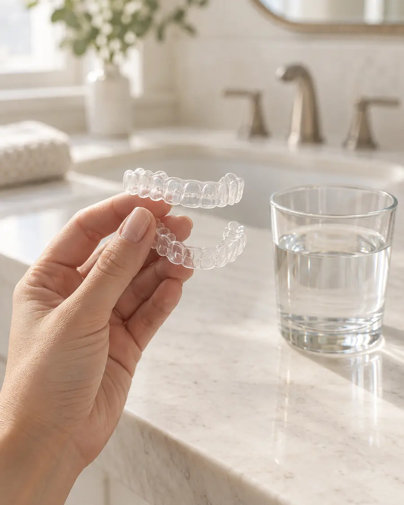
Mehrere Tage · zu Hause
Nach einem Abdruck fertigen wir dünne Schienen für Ihre Zähne. Darin tragen Sie über mehrere Tage ein milderes Gel. Das dauert länger und ist oft angenehmer für empfindliche Zähne.
Ablauf
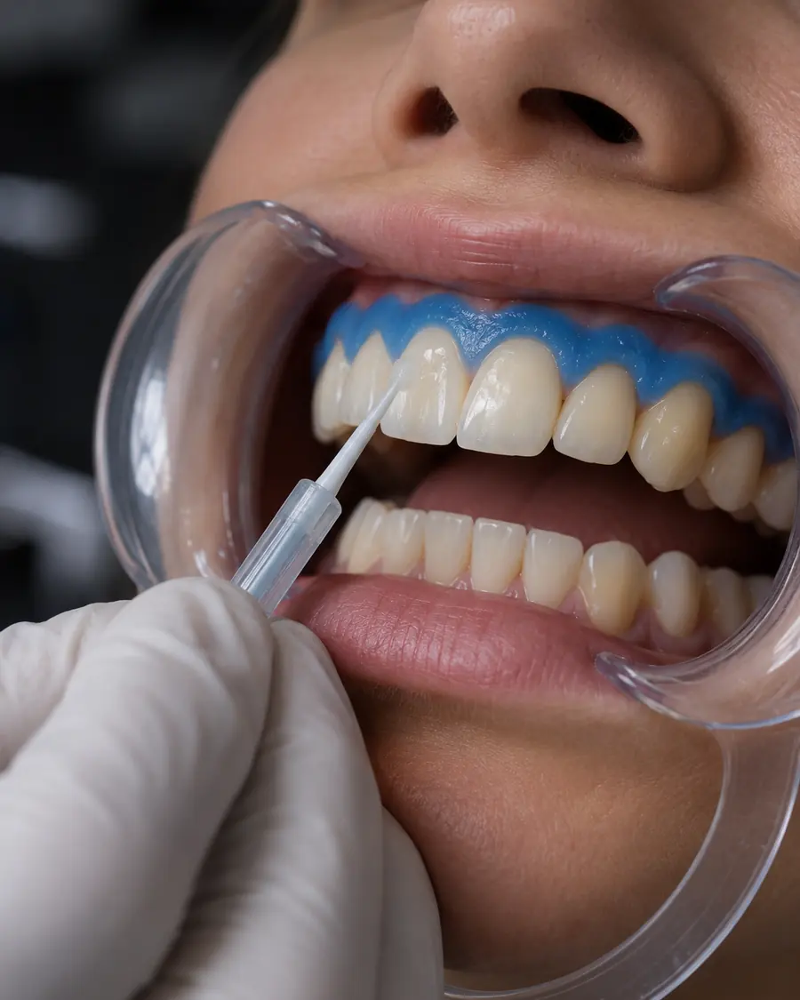
Vor dem Gel kommt die Untersuchung, und davor immer eine professionelle Zahnreinigung. Karies, undichte Füllungen oder freiliegende Zahnhälse behandeln wir zuerst. Füllungen, Kronen und Veneers hellen nicht mit auf; liegen sie im sichtbaren Bereich, planen wir sie von Anfang an mit ein.
Wie hell ein Zahn werden kann, entscheidet der Zahn: Ausgangsfarbe, Schmelzdicke, Art der Verfärbung. Gelbliche Töne sprechen meist gut an, graue deutlich zurückhaltender. Ein Versprechen in Stufen geben wir nicht, aber Sie erfahren vorher, was realistisch ist.
Eine Schutzschicht deckt das Zahnfleisch ab, dann kommt das Gel auf die Zähne und wirkt kontrolliert ein, oft in mehreren Durchgängen. Konzentration und Einwirkzeit legt die Praxis fest, nicht eine Packungsbeilage. Weh tun sollte das nicht; eine kurze Kälteempfindlichkeit geht meist nach wenigen Tagen vorbei.
Dieselbe Skala, dieselben Zähne, eine neue Nummer. Direkt danach wirken Zähne oft etwas heller, als sie bleiben; nach ein bis zwei Wochen hat sich die Farbe gesetzt. Wie lange sie hält, liegt vor allem an Kaffee, Tee, Rotwein und Rauchen, meist sind es ein bis drei Jahre.
Wann Bleaching hilft
Woher die Farbe kommt, entscheidet, wie gut sie sich aufhellen lässt. Welche Ursache bei Ihnen vorliegt, klären wir bei der Untersuchung.
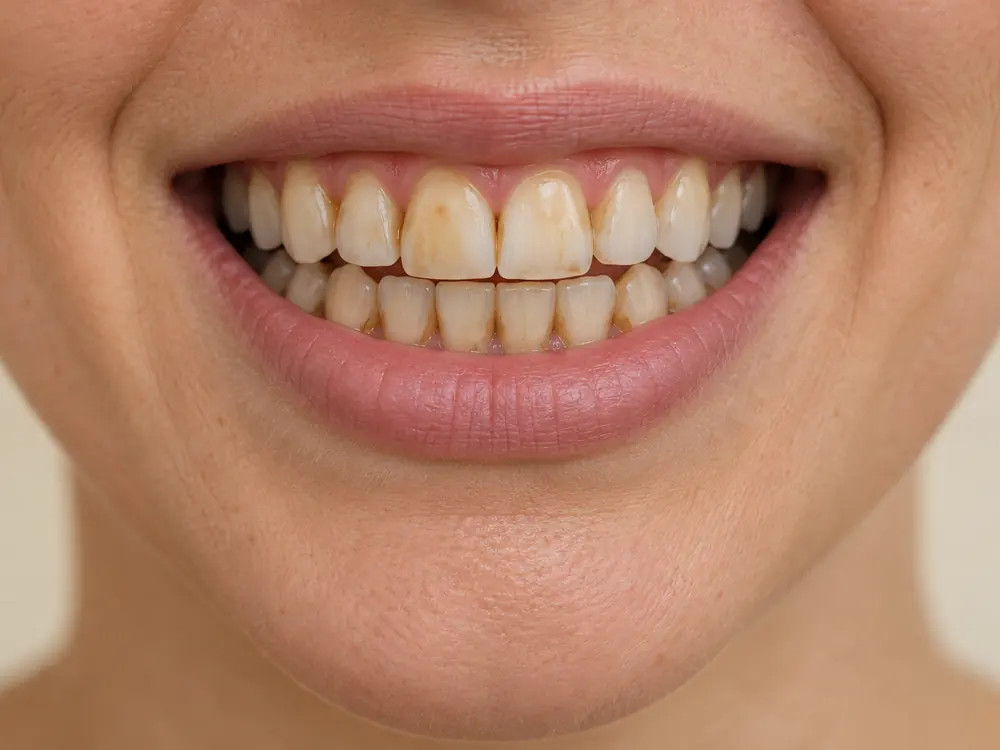
Die häufigste Verfärbung und die, die am besten anspricht. Die Farbstoffe sitzen im Zahn und lassen sich aufhellen.
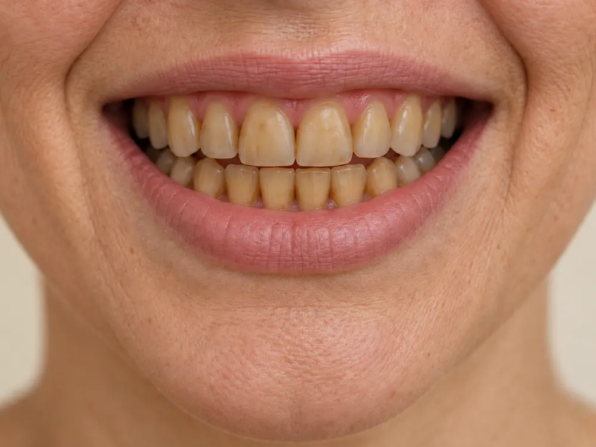
Zähne werden mit dem Alter dunkler und gelblicher. Auch diese Einlagerungen hellt ein Bleaching in der Regel gut auf.
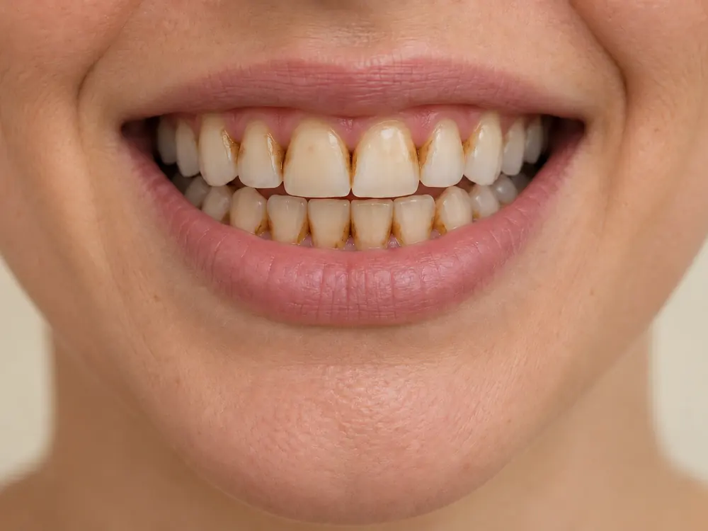
Beläge entfernt die Zahnreinigung, was im Zahn eingelagert ist, das Bleaching. Beides zusammen wirkt am besten.
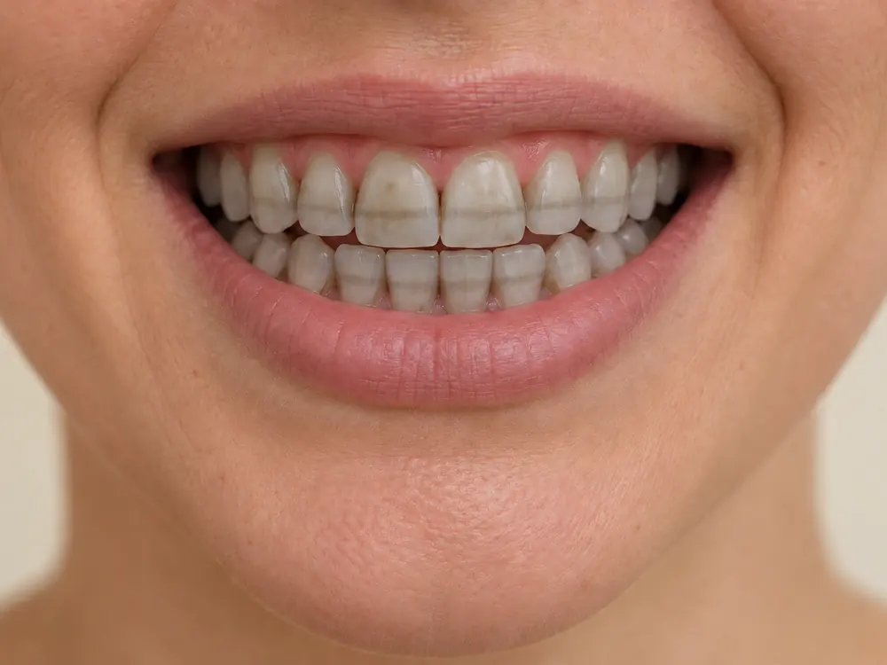
Graue oder streifige Verfärbungen, etwa nach bestimmten Antibiotika in der Kindheit, hellen zurückhaltender und ungleichmäßiger auf.
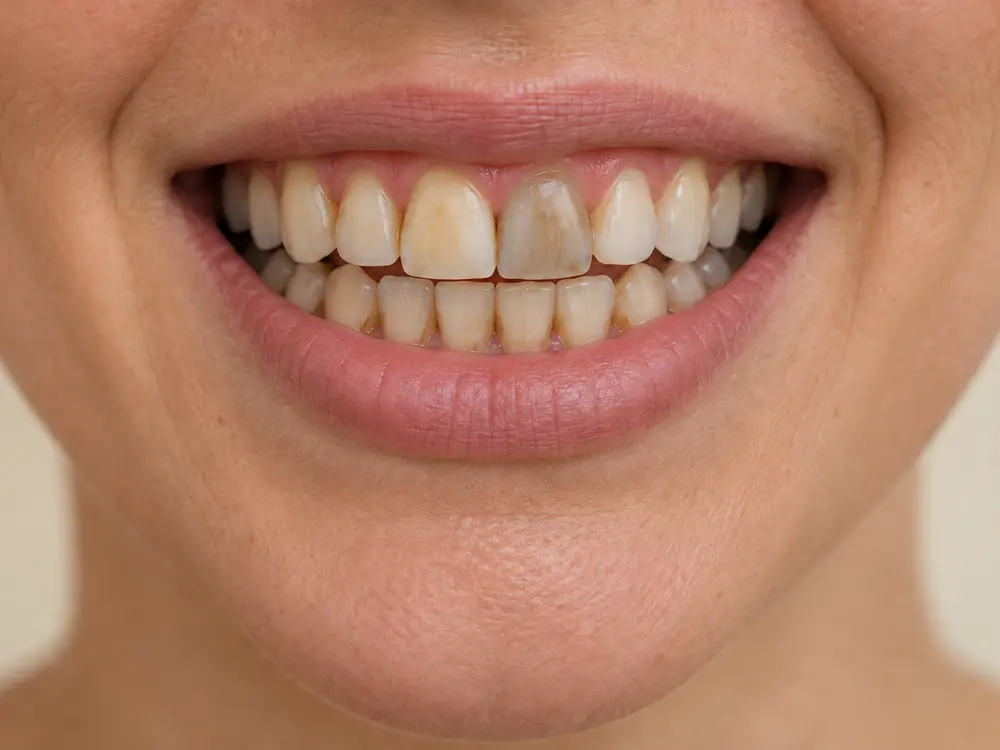
Oft nach einer Wurzelbehandlung. Von außen hilft Bleaching hier wenig; welches Vorgehen passt, besprechen wir mit Ihnen.
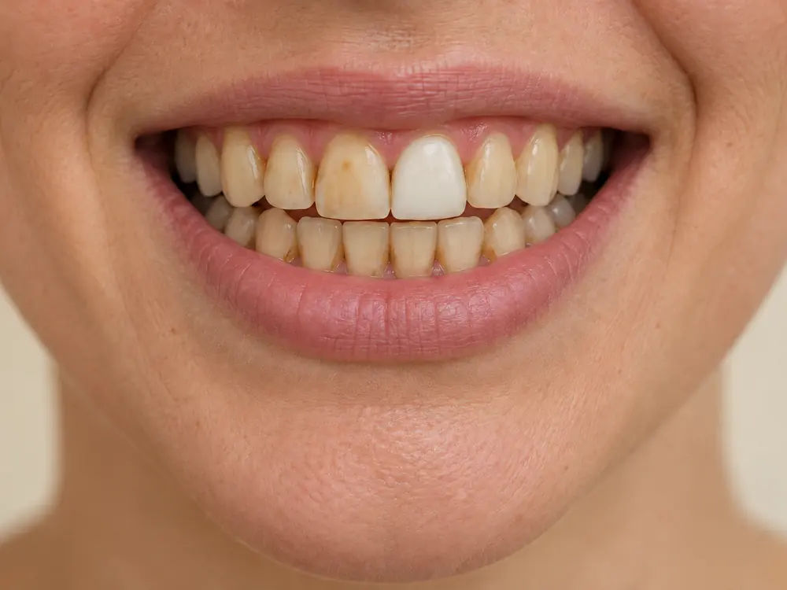
Sie behalten ihre Farbe. Liegen sie vorn, planen wir von Anfang an, ob sie nach dem Bleaching angepasst werden.
Wer Sie behandelt
Zahnarzt · Zahnarztpraxis AIXSMILE, Aachen
Ein Bleaching beginnt bei uns mit einer Untersuchung und einer Nummer auf der Farbskala, nicht mit dem Gel. Wir sagen Ihnen vorher, welches Ergebnis bei Ihren Zähnen realistisch ist, und messen hinterher nach.
Kann Bleaching Ihr Ziel nicht erreichen, zum Beispiel weil sichtbare Füllungen oder Kronen nicht mit aufhellen, sagen wir das offen und zeigen Ihnen, welche Möglichkeiten es sonst gibt.
Beraten wird auf Deutsch, Englisch, Farsi, Türkisch oder Arabisch, je nachdem, worin Sie sich am wohlsten fühlen.
Häufige Fragen
Ihre Frage ist nicht dabei? Wir beantworten sie gern am Telefon oder im Beratungstermin.
Bei gesunden Zähnen und einem zahnärztlich dosierten Gel nicht. Der Schmelz behält seine Dicke; verändert werden nur die eingelagerten Farbstoffe. Genau deshalb untersuchen wir vorher, ob Karies, Risse oder undichte Füllungen im Weg sind.
Bei den meisten Menschen ein bis drei Jahre. Wer viel Kaffee, Tee oder Rotwein trinkt oder raucht, sieht die alte Farbe schneller zurückkommen. Eine Auffrischung ist dann mit wenig Aufwand möglich.
Die Behandlung selbst tut in der Regel nicht weh. Vorübergehend können die Zähne empfindlicher auf Kälte reagieren oder kurz ziehen. Das vergeht meist nach wenigen Tagen; eine fluoridhaltige Zahnpasta kann dabei helfen.
Nein. Kunststofffüllungen, Kronen und Veneers behalten ihre Farbe. Liegen sie im sichtbaren Bereich, kann es sinnvoll sein, sie nach dem Bleaching an die neue Zahnfarbe anzupassen. Das besprechen wir vorher mit Ihnen.
Oft ja, mit angepasstem Vorgehen: einem milderen Gel, kürzeren Einwirkzeiten oder einer Vorbehandlung, die die Zähne weniger empfindlich macht. Ob das in Ihrem Fall reicht, klären wir bei der Untersuchung.
Das entscheiden wir am Einzelfall. Freiliegende Zahnhälse reagieren empfindlicher und hellen anders auf als der Schmelz. Wir sehen uns die Stellen genau an und schützen sie während der Behandlung.
Ist beides geplant, kommt das Bleaching zuerst. Die Farbe der Veneers wird dann an die aufgehellten Nachbarzähne angepasst. Umgekehrt geht es nicht, denn eine Keramikschale wird durch Bleaching nicht heller.
In der Praxis geht es schneller: ein Termin, ein stärker dosiertes Gel unter Aufsicht. Mit Schienen, die nach einem Abdruck Ihrer Zähne gefertigt werden, tragen Sie über mehrere Tage ein milderes Gel zu Hause. Welcher Weg passt, hängt von Ihren Zähnen, Ihrer Zeit und Ihrer Empfindlichkeit ab.
Mit einer Farbskala aus Musterzähnen, die wir bei Tageslicht direkt neben Ihre Zähne halten. Jeder Musterzahn hat ein Kürzel. Wir notieren den Wert vor und nach der Behandlung, damit das Ergebnis vergleichbar bleibt und nicht vom Licht eines Fotos abhängt.
Nein. Untersuchung und Farbbestimmung sind bei gesetzlich Versicherten eine Kontrolluntersuchung und laufen über die Krankenkasse; Privatversicherte reichen den Termin wie gewohnt ein. Kosten entstehen erst, wenn Sie sich nach dem schriftlichen Kostenplan für die Aufhellung entscheiden.
Die Praxis
Wie andere Patientinnen und Patienten uns erlebt haben, steht bei Google.
Zu den Google-BewertungenWir suchen hier nichts heraus. Lesen Sie bei Google, was gut ankam und was nicht.